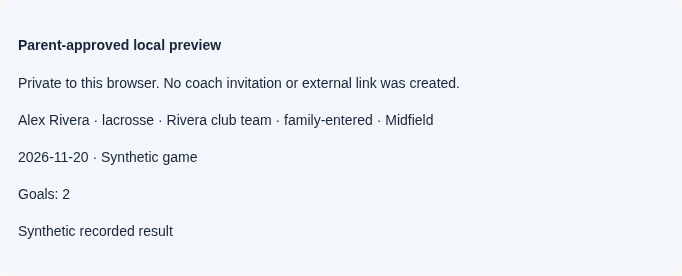
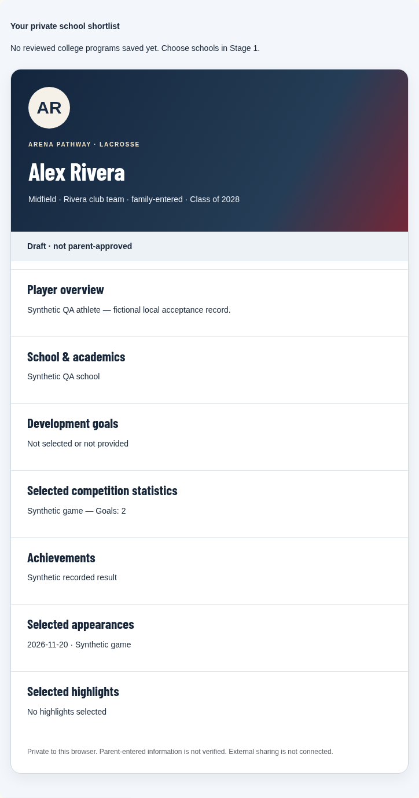

AP conformance recovery — actual rendered comparisonsProduct conformance recovery — actual rendered pages
SC: live public/demo pages, fictional records, November14. AP: identical synthetic local fixtures at638b53fb and the recovery candidate. Protected SC production editing is source-verified; no reconstructed fixture is presented as live SC. Source and data coverage differ.
Recruiting player card
SC's demo projection and AP's local-only projection use different synthetic inputs. Both keep field selection separate from preview. AP creates no secure external sharing link.
Soccer Center · actual demo preview AP · baseline text preview
AP · baseline text preview
AP · selected local player card